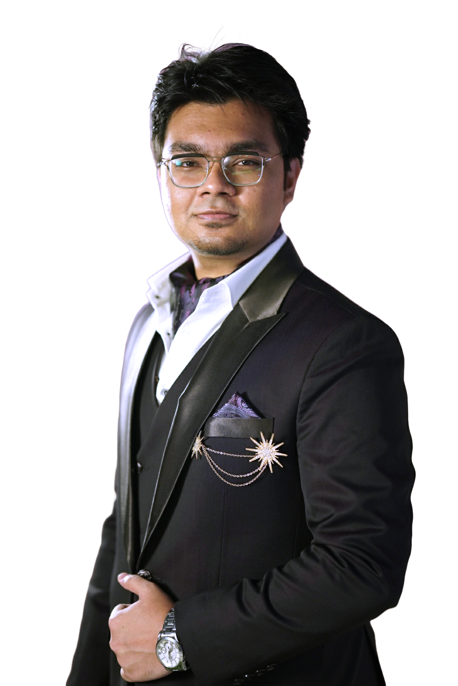

Business application
TKMR RFQ System
Secure submission workflows, quotation management, vendor links and administrative dashboards.
VueQuasarTypeScriptExpressPrismaPostgreSQL
AVAILABLE
Istinub Azad / Software Developer & IT Professional
I develop practical software, support business technology, and explore the intersection of cybersecurity, cloud systems and AI. From full-stack applications to real-world IT operations, I turn complicated workflows into usable solutions.

01 / ABOUT
Technology, systems & real-world impact with Modern Tech
I'm an IT professional with a foundation in computer science and engineering, combining academic knowledge with hands-on experience across development, business applications, and IT operations.
My work includes developing and enhancing business solutions such as TKMR's RFQ platform, Marinex360 field-management system, and the APMS (Attendance & Payroll Management System). These projects reflect my focus on building practical digital solutions that support business processes and improve operational efficiency.
Currently based in Hobart, Tasmania, Australia, I've gained experience working with organisations in Australia and internationally. Beyond software development, my technical interests include cybersecurity, artificial intelligence, data analytics, and cloud technologies, complemented by academic research and continuous professional learning. I'm passionate about bridging technology and business needs, simplifying complex workflows, and creating reliable, scalable solutions that deliver real-world value.
02 / SELECTED WORK
Business solutions, academic projects and practical utilities. Some corporate systems are private; details are limited to public-safe summaries.
Secure submission workflows, quotation management, vendor links and administrative dashboards.
Field service management platform with job orders, workflow states and mobile/offline design.
A Python-based desktop application designed to support workforce attendance administration. APMS imports RFID data from an existing system, organises employee records, and genrates reports.
An online system for hiring cars with a secure server.
A playable system with simple graphical geometry.
An application to maintain and manage apartment databases.
An online platform for communicating with psychology specialists.
3D modeling and circuit analysis of a can-sized device performing satellite-like missions.
Small, practical utilities designed to simplify everyday tasks.
03 / EXPERIENCE
Experience across development, IT support, research, operational systems and design leadership.
Two distinct Australian placements in web development and IT support.
Contributed to the Xertime progressive web application using Vue.js, TypeScript, Express and AdminJS, gaining experience with full-stack web development and team-based software delivery.
Organisation websiteProvided IT support for POS terminals, online ordering and kiosk workflows; documented troubleshooting procedures, prepared staff training content, supported the helpdesk, assisted with reporting & managing different digital systems, Data analysis and business technology analysis
Full-stack development of RFQ and Marinex360 workflows; TypeScript, Vue, Prisma, PostgreSQL, and corporate web/DNS administration.
Organisation websiteCustomer and systems support for bookings, access gates, payment stations, intercoms and airport kerbside operations.
Organisation websiteWorked on ERP-oriented web development with the Frappe framework.
Organisation websiteMapped real-estate properties with digital graphics tools.
Organisation website04 / CAPABILITIES
Technologies and systems I've worked with or studied, organised by discipline rather than subjective proficiency percentages.
HTML · CSS · JavaScript · TypeScript · Vue 3 · Quasar · Bootstrap
Node.js · Express · Fastify · REST APIs · PHP · Laravel · Frappe
PostgreSQL · Prisma · MySQL · MariaDB · MongoDB · SQL
Docker · GitHub · GitHub Actions · AWS · Azure · Render · Netlify · Neon
Network troubleshooting · Linux · Kali · VMware · FTK Imager · Security fundamentals
Python · C# · Java · Flutter · Kotlin · Microsoft 365 · Data reporting
05 / EDUCATION
University of Tasmania · Hobart, Australia
Web development, software engineering, cybersecurity, IT management, artificial intelligence and data analytics.
University website ↗BRAC University · Dhaka, Bangladesh
Algorithms, databases, computer networks, software engineering, AI, operating systems and digital systems.
University website ↗06 / CERTIFICATIONS
Professional learning pathways, technical training and individual course credentials.
Skillsoft · 2026
CompTIA Cloud Essentials+ aligned learning
Structured learning across cloud infrastructure, migration, operations, DevOps, security and governance.
15 courses · 18+ hours of structured learning.
View CertificatesSkillsoft · 2026
Professional learning covering Microsoft 365 Copilot, Zero Trust, AI governance, information protection and secure digital workplace practices.
Building capability for secure and responsible AI adoption.
View CertificatesUdemy | Date: March 28, 2023
Coursera | Date: Sep 30, 2020
Coursera | Date: Sep 6, 2020
Coursera | Date: Jul 28, 2020
Coursera | Date: Jul 27, 2020
Coursera | Date: Oct 1, 2020
Udemy | Date: May 9, 2023
Cisco Networking Academy | Date: 2026
Cisco Networking Academy | Date: 2026
Square Securities Management Ltd. (SSML) | Duration: Feb - May 2023
07 / PUBLICATIONS
Published in: International Conference on Advances in Computing and Data Sciences (ICACDS), April 2022 · Co-authors: A. A. Aporna, N. S. Amlan, HM Mehedi, Md. J. A. Mahbub, A. A. Rasel
Read publicationPublished in: International Conference on Information and Computer Technologies (ICICT), March 2023 · Co-authors: I. H. Emon, K. N. Iqbal, A. A. Aporna, N. S. Amlan, M. S. Islam, R. Rahman
Read publication08 / CONTACT
I'm open to discussing software development, IT opportunities, technology projects and professional collaboration.
Email me ↗